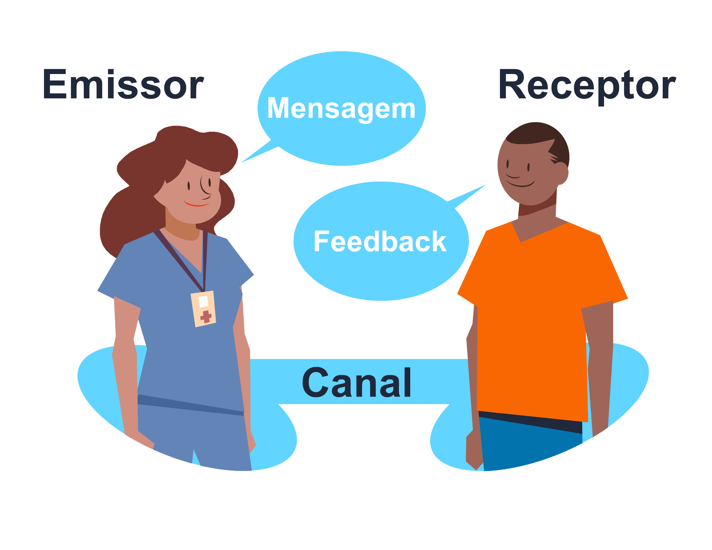
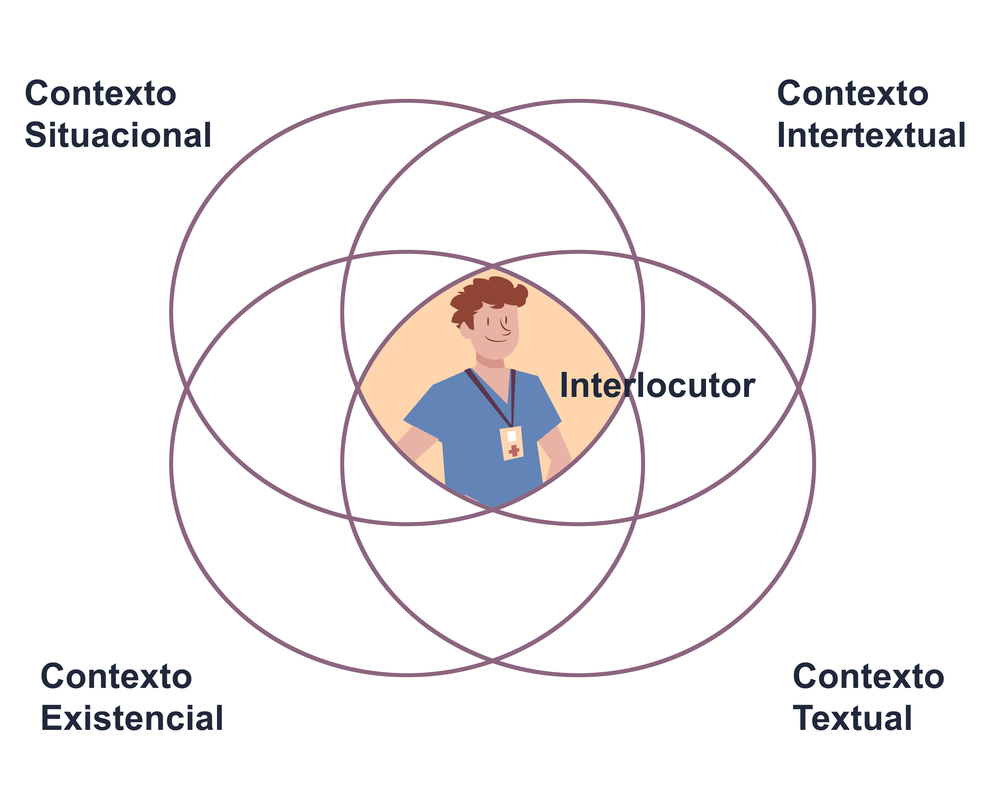

Módulo 4 | Aula 1 A comunicação em saúde e estratégias para melhoria na APS
Conceito de comunicação
Para que possamos iniciar nosso estudo sobre comunicação em saúde e estratégias para melhoria na Atenção Primária à Saúde (APS), é necessário compreender algumas questões sobre a comunicação.
Ao buscarmos a origem da palavra “comunicação”, encontramos a expressão em latim communicare, que significa “por em comum”, “entrar em relação com”, “compartilhar”. Desse modo, de acordo com a origem da palavra, a comunicação implica a troca de mensagens, envolvendo a emissão e o recebimento de informações.
Segundo Nunes, Barroca e Marino (2019), esta troca de mensagens leva à possibilidade de compreensão entre os seres humanos, visando à adaptação entre eles, ao meio e à construção da realidade social.
Conforme aponta Araújo (2007, p. 101), “nosso cotidiano está todo permeado pela comunicação”. Nos comunicamos a todo momento, nos mais variados lugares e é por meio da comunicação que nos relacionamos com as pessoas, tornando possível a convivência em sociedade. A comunicação, portanto, é algo que não fazemos sozinhos, mas da qual participamos na relação com o outro.
A partilha de mensagens acontecerá à maneira de como o “eu”, o “outro”, a cultura, o contexto e a linguagem se influenciam (NUNES, BARROCA, MARINO, 2019). Por isso é fundamental que o emissor se adapte ao contexto e ao mundo particular do receptor da mensagem. Reis (2010, p.16) também aponta que “é importante que cada participante na comunicação seja capaz de se adaptar à outra pessoa, ao contexto e ao tipo particular de relação em que está envolvido”.
Tradicionalmente, a comunicação é vista como a simples transferência de informações por parte de alguém que detém conhecimentos e habilidades a outro que não os possui. Em tal perspectiva, a comunicação é considerada como um processo linear e unidirecional de transferência de conhecimentos, pautado em uma relação fechada entre o emissor e o receptor, sem diálogo e sem escuta. Durante muito tempo, foi esse o modelo de comunicação mais conhecido e utilizado, inclusive em campanhas publicitárias da saúde. É muito provável que você já tenha se deparado com a seguinte explicação:

Contudo, não podemos limitar a comunicação apenas à transferência de informações. Ela precisa ser entendida como uma prática social, permeada por contextos políticos, culturais e institucionais. Nesse sentido, Araújo (2004, p. 171) rompe com o modelo linear e dicotômico de comunicação (emissor-receptor) e propõe o conceito de “Interlocutores” que correspondem aos mediadores de um processo de negociação da produção, circulação dos sentidos sociais. Assim, cada indivíduo participa por inteiro da prática comunicativa. Nesse modelo, não há mais emissores e receptores polarizados, mas sim interlocutores que produzem e fazem circular discursos que se transformam a depender dos contextos dos interlocutores (ARAÚJO, CARDOSO, 2007), como demonstram as figuras a seguir:


A comunicação, portanto, não é uma simples transmissão de informação, até porque a mensagem não chega ao “receptor” exatamente como imaginada pelo “emissor”, além de ser entendida de forma diferente de pessoa para pessoa. Ou seja, o processo de comunicação é diretamente impactado pelos contextos que envolvem cada indivíduo.
Da mesma forma, se analisarmos o lugar de interlocução de onde partiu a mensagem, podemos pensar que faz muita diferença para uma senhora de 80 anos receber uma mensagem sobre a vacinação contra a gripe de uma autoridade de saúde pública, de um médico na UBS, da sua prima-irmã, do seu líder religioso/espiritual ou de um desconhecido na rua. Mesmo que seja colocada em circulação a mesmíssima mensagem – por exemplo: “Tome a vacina da gripe!” - ela vai atingir aquela senhora de formas diferentes, a depender do interlocutor que a pronuncia (da relação que ele tem com aquela senhora, do caráter de autoridade que carrega, da sensação de confiança que desperta, entre outros fatores contextuais).
Tome a vacina da gripe!
Essa situação nos mostra como a comunicação atua na produção e circulação de sentidos e pode servir a objetivos e interesses específicos. Por isso, a comunicação possui papel central nos processos de compreensão do mundo, sendo elemento estruturante das relações sociais contemporâneas. Como tal, é importante perceber a comunicação também como um direito humano, assim como a saúde (STEVANIM, MURTINHO, 2021).
A comunicação tem o potencial favorável de mudar e influenciar modos de vida, relações dos indivíduos com ele mesmo e com os outros e ainda sim, de forma negativa, reforçar preconceitos, e construir barreiras responsabilizando isoladamente um indivíduo ou uma situação sem levar em consideração os determinantes sociais envolvidos naquele evento.
A compreensão dessas breves considerações sobre comunicação é fundamental para introduzir a discussão acerca da comunicação em saúde.
A comunicação pode nos ajudar a ter mais saúde? O que sabemos sobre a comunicação em saúde? Qual a importância da comunicação em saúde?
As respostas a estes questionamentos são fundamentais para um desenvolvimento adequado da comunicação dentro dos ambientes de cuidado em saúde, nos quais ocorrem as relações entre os trabalhadores e os usuários dos serviços de saúde. Relações essas que são intermediadas pela comunicação.
Você sabia que a comunicação pode atuar como uma balança, pesando positivamente ou negativamente quando falamos em ações de saúde? Existem laboratórios acadêmicos que estudam os efeitos da comunicação em saúde. Veja alguns exemplos:
Nas conferências de saúde que se seguiram à VIII Conferência Nacional de Saúde, em 1986, assim como em outros fóruns de discussão, o tema da comunicação ganhou evidência e passou a ocupar especial atenção nas políticas públicas de saúde. Existem alguns laboratórios acadêmicos no Brasil que se dedicam hoje a estudar as relações entre Comunicação e Saúde. Entre eles, podemos citar o Laboratório de Comunicação e Saúde (LACES), do Instituto de Comunicação Científica e Tecnológica em Saúde (ICICT), da Fiocruz, o Laboratório de Educação, Informação e Comunicação em Saúde (ECOS), da UnB e o Laboratório de Pesquisa, Gestão, Inovação e Tecnologias em Saúde (LABITECS), da Universidade Federal da Fronteira Sul (UFFS).
E se a comunicação é tão importante, quais são seus objetivos? Avance e conheça mais sobre a comunicação em saúde.